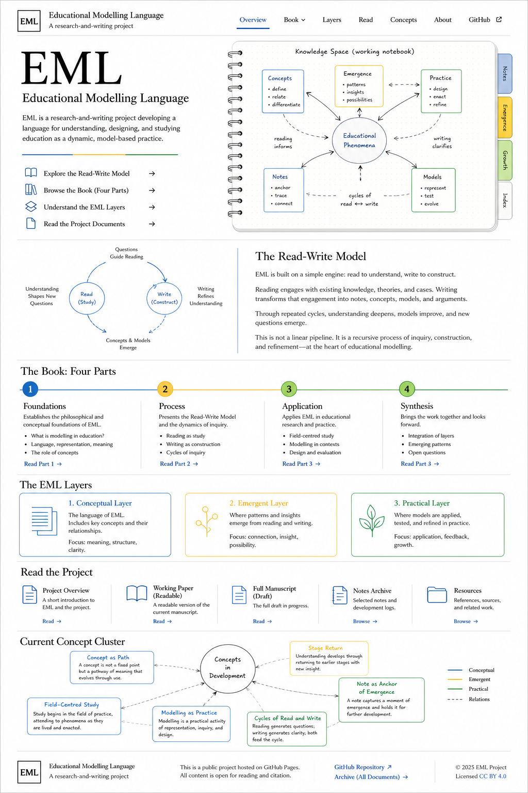

Orientation
Lived experience, inheritance, self-location, ethical drift, and formative action.
Educational Modelling Language is a book and learning system for making learning visible, traceable, and revisable across time.
The project studies how handwriting anchors thought, AI projection externalises structure, and human re-reading contests the transformed output. The purpose is to train the human, not the machine.

Educational Modelling Language is a way of making learning visible, traceable, and revisable. This site is the public surface of the EML project.
The Read-Write Model is the EML mechanism through which thought becomes visible, revisable, and trainable over time.
The manuscript is designed as a model in book form.
Lived experience, inheritance, self-location, ethical drift, and formative action.
Symbols, casting, crucible, knowledge space, read-write cycles, and drift vectors.
Classroom scenes, AI interactions, workflows, MVPs, tool use, and artefacts.
Agentic learning systems, technics, delegated agency, and human-AI ecology.
Each educational encounter can be read through structure, time, and agency.
Nodes, links, flows, constraints, forms, visual grammar, and knowledge-space topology.
Repetition, delay, casting, drift, memorisation, and learning over time.
Learners, educators, AI, notebooks, diagrams, prompts, tools, and delegated agency.
Public links open the living GitHub repository and its source documents.
The current development thread treats a concept as a path rather than a fixed object. A note draws movement from latent space into a field of study, where it can be returned to, tested, and developed.